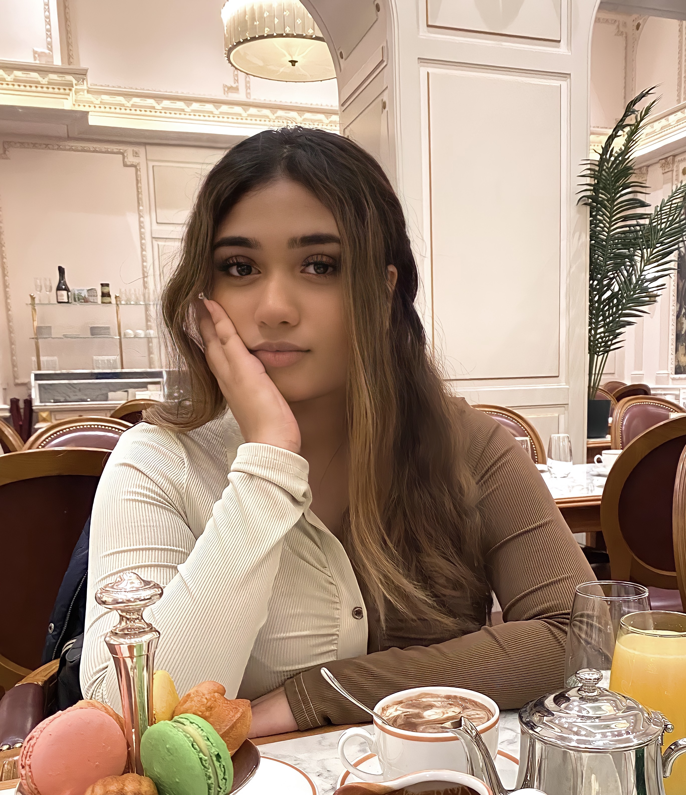

About Us
Roseanne Rozario, aka RSR, is an artist from Queens, New York City. As an immigrant with a South Asian descent, she works to incorporate her culture with the art of the western world. This creates a mental awareness of the generational traumas of South Asians and how to break them, through beautiful artwork that depicts this message with a splash of humour. Explore this pop of art and culture in the world that combines both sides of her identity: American and South Asian. Here we create a space where all children of immigrants can come together and go down this journey of familiar stories and experiences. Let's work together to break the cycle and make room for our mental health!


All rights reserved 2022. Copyright property of RSR